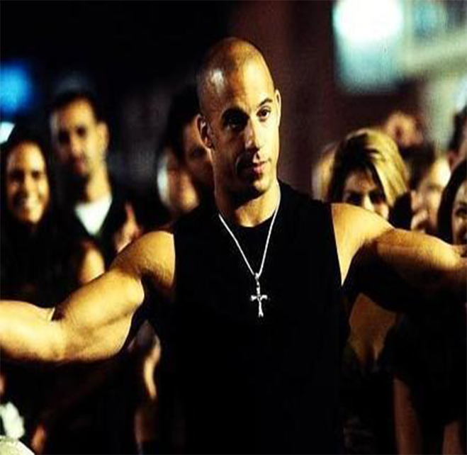

Los Angeles police officer Brian O 'Connor dives into the underworld of street racing in order to investigate a series of highway robberies targeting trucks.
Shawn is a troubled teenager who has run into several legal conflicts due to illegal street racing in the United States. He was sent to live with his father in Tokyo, Japan, in order to avoid prison after losing control of a game that led to a serious accident, as his last chance to correct his behavior. However, upon arriving in Tokyo, Shawn was soon attracted by the local street racing culture, which was a new challenge for him, based on "drift" technology.Brian eventually earned the trust of racing driver Dominic Toretto to join the racing team he led. As the investigation progresses, Brian develops an emotional relationship with Dominic's sister Mia and a growing sense of loyalty to Dominic.
In a pivotal operation, Brian is forced to make a choice between continuing his police duties or helping Dominic, who has now become a friend, escape. In the end, Brian chose to help Dominic flee the scene, thereby betraying his identity as a cop.